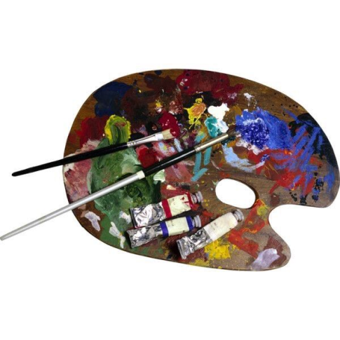

Onde a arte se cria, se transforma em algo diferente, único e seu lugar de comodidade comforto e bem estar.
Nathan Campelo

Quem Somos
Quem sou eu?
Me chamo Nathan Campelo Ferreira, tenho 17 anos estou cursando no if sul de minas campus Muzambino o curso técnico em informática integrado com o terceiro ano do ensino médio.
Motivações
desenho desde criança,mas um dos gatilhos para eu me engajar no desenho foi quando fui introduzido á cultura pop asíatica, como animes, mangás ,artistas musicais e desenhos